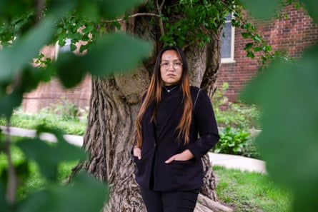
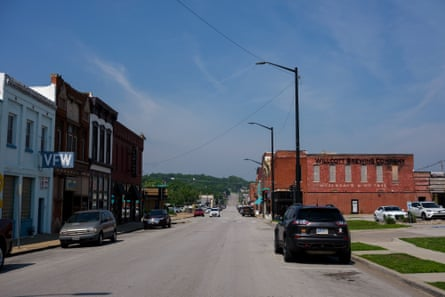
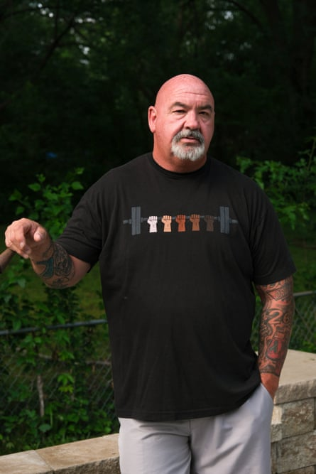
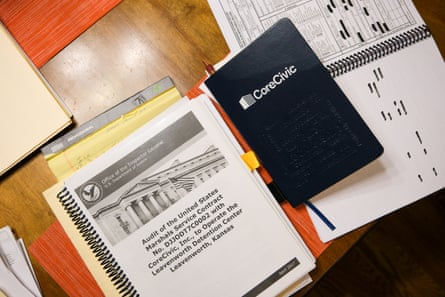

I t was a lovely May evening in Leavenworth, Kansas , but instead of strolling along the Missouri River or gardening, a group of locals sat on squeaky folding chairs at the public library to discuss their mission: how to stop a private prison behemoth from warehousing immigrants down the road.
This was happening in a famously pro-prison town, home to one of the oldest federal penitentiaries, and where Donald Trump won more than 60% of the vote in 2024. Besides the military and the Veterans Affairs medical center, prisons are the largest employer in this community, 30 miles north-west of Kansas City. With federal immigration detention facilities around the country packed due to the Trump administration’s mass deportation efforts, the private prison industry is experiencing a boom. Stock prices of companies like GEO Group and CoreCivic soared as they gained scores of contracts.
But when CoreCivic applied earlier this year for a permit in Leavenworth to reopen a prison with a troubled history to hold immigration detainees, city officials balked. And local residents – including some former prison employees – pushed back.
That evening at the library, the citizens waited to hear whether a federal judge would decide if Leavenworth had the right to tell CoreCivic to buzz off. Regardless of what happened in court, organizers of this “teach-in” were preparing attendees for the next possible round of the fight. Over homemade chocolate chip cookies and sun tea, they talked about how to get letters published in the Leavenworth Times and reminded attendees to politely pester elected officials.
Local organizer (and cookie baker) Rick Hammett suggested to the crowd that political and corporate interests had stirred fears of immigrants ahead of the 2024 election cycle to benefit private prisons.
“To be profitable, private prison firms must ensure that prisons are not only built but also filled,” Hammett said. “Which is how you end up with a scare tactic over migrants to drum up a reason to put people in jail.”
In early June, US Immigration and Customs Enforcement reported the most immigrant arrests in a single day in its history: more than 2,200 people.
Ashley Hernandez, an organizer for the Sisters of Charityof Leavenworth, lamented that CoreCivic has portrayed those who oppose the Ice detention facility as “out-of-town” agitators . But this room is full of locals, she noted. “ They’re the outside organization.”
The Sisters of Charity is a Catholic convent – they prefer the term “community” – that has been in Leavenworth longer than the prisons – even before statehood. Part of the Sisters’ mission is to “advocate for justice and systemic change” for exploited and marginalized people, Hernandez later explained.
Ashley Hernandez poses for a portrait at Sisters of Charity of Leavenworth, Kansas.Photograph: Arin Yoon/The Marshall Project
The nuns “understand the history of injustices that have gone on in that prison, and they’ve never been OK with that”, she said.
Leavenworth’s landmarks hint at a progressive past that dates to at least the 1850s, when Kansas opposed slavery and fought for admission to the US as a free state. The effort’s most radical proposal was the “Leavenworth constitution” which asserted that “all men are by nature equally free and independent”. Leavenworth’s city hall has statues of Lady Liberty and Abraham Lincoln; a nearby park has a plaque for women’s suffragist Susan B Anthony, who spent time here with her newspaper publisher brother. The landscape is dotted with little reminders that people who don’t have power can always fight for it.
Many locals remember what happened when CoreCivic previously ran the detention center, housing mostly pretrial detainees for the US marshals from 1992-2021. They recall guards who were permanently injured by prisoner attacks and understaffing that undermined security, according to a federal audit.
Mike Trapp, a local writer and activist who reserved the room for the library teach-in, said he’s seen some softening recently among his neighbors who were Trump voters. Even those who support the mass deportations “are on our side in not trusting CoreCivic to do the right thing”, he said.
Scandals plagued the facility during its final years of operation – beatings, stabbings, suicides and alleged sexual assaults, according to court records. Leavenworth police said they were blocked at the gate from investigating crimes inside. The facility finally closed in 2021 as the Biden administration shifted away from private prison contracts.
The city changed its ordinance since CoreCivic initially opened a prison here, just six miles south of the federal government’s own massive medium-security penitentiary, which has been operating since 1903. The rules now require a new prison operator to seek a city permit. CoreCivic paid a fee and applied for a permit in February to reopen its facility, now called the Midwest Regional Reception Center. But the firm quickly reversed course as residents’ opposition mounted.
CoreCivic argued in court filings that because it retained employees in Leavenworth, it never really closed – and didn’t need a permit to reopen the facility. City leaders responded by suing in federal court , and then state court , seeking to block CoreCivic from repopulating the facility. In filings, the city argued the company previously ran an “absolute hell hole” , and the infamous American prison town did not want this one.
In an editorial in the Kansas Reflector, critics of reopening the prison fumed: “CoreCivic has repeatedly shown that it is incapable of running a humane facility. Now, the company flouts city approval to move forward with an ICE center based on false promises.”
Downtown Leavenworth, Kansas.Photograph: Arin Yoon/The Marshall Project
Some in Leavenworth opposed the new facility because they feared undocumented immigrants could be released locally, leading CoreCivic to repeatedly promise that any agreement with Ice would strictly prohibit that.
In early June, a state district judge sided with the city and issued a temporary injunction, saying the company needed a permit.
David Waters, a lawyer for the city, said the case is about following the permitting process and not about “immigration policy, writ large”.
A week later, CoreCivic filed a motion asking the district court judge to reconsider, arguing that the city failed to prove reopening the facility would cause “irreparable” future harm or that the company needed a permit.
Leaders at CoreCivic have dismissed critics, saying the company has had more than 1,600 applicants for 300 jobs with a starting salary of $28.25 an hour, plus benefits.
“We maintain the position that our facility, which we’ve operated for almost 30 years, does not require a Special Use Permit to care for detainees in partnership with ICE,” said Ryan Gustin, senior director of public affairs, in an email.
He touted the company’s promises to Leavenworth: a one-time impact fee of $1m, a $250,000 annual fee and an additional $150,000 annual fee to the police department. This is in addition to the over $1m in annual property taxes CoreCivic already pays, Gustin said.
The Reception Center originally expected “residents” as of 1 June . The company has posted numerous photos of its warden handing out $10,000 checks to veteran’s causes and the Salvation Army.
In legal filings, CoreCivic argued that preventing the opening of its 1,000-plus bed facility would cost it more than $4m a month. In a federal financial disclosure filed in May, the company stated its letter agreement for the Leavenworth facility with Ice authorized payment up to nearly $23m for a six-month period “while the parties work to negotiate and execute a long-term contract”.
Gustin said most of the concerns about safety and security of the facility were “concentrated in an 18-month period” over 30 years of operations and attributed staffing shortages to the Covid-19 pandemic and a tight labor market. “As with any difficult situation, we sought to learn from it,” he said.
W hen CoreCivic previously operated the Leavenworth detention center, Tina Shonk-Little was detained there for about 16 months for insurance fraud. She described for the crowd that night at the Leavenworth library how medical and dental care in the facility was scant.
“If you had a toothache, they just pulled it,” she said. Her smile bears the scars.
Bill Rogers poses for a portrait at his home in Kansas City, Kansas.Photograph: Arin Yoon/The Marshall Project
She recoiled when Hammett cited public records showing CoreCivic’s CEO earned more than $7m last year . Corporate leaders at CoreCivic and GEO Group gushed on recent earnings calls about the “unprecedented opportunity” they’re facing with Trump in office. Ads and text messages show CoreCivic is offering new guards $2,500 signing bonuses.
Across the river in rural Missouri, cash-strapped sheriff’s departments are signing up to hold Ice detainees in small jails for $110 per night, per head , and to transport them as far as Kansas City for $1.10 per mile. Emails obtained through public records requests show that about a week after Trump was elected, CoreCivic leadership began contacting Leavenworth city officials about reopening their facility there.
“They don’t want to do better. They are in it for profit,” Shonk-Little said. “They could give two shits about the people. The more people they have, the better off they are because it’s more money in their pocket.”
Shonk-Little expressed sympathy for the corrections officers who worked there. “God bless the corrections officers who did what they could with what they had,” she said.
Toward the back of the room sat Bill Rogers, a brick wall of a man who spends nearly two hours a day in the gym. He was one of those guards. A few minutes after her speech, Rogers stood suddenly, looking like a frog was lodged in his throat, as his eyes welled with tears.
He spoke directly to Shonk-Little: “What courage … to come here. And everything you said was right. It was true. I remember. And as a former officer, I apologize. That’s all I can say.”
She responded: “I’m sorry you were treated the way you were treated also.”
They hugged.
At a coffee shop the next morning, Rogers explained he was a high school dropout and heavy equipment operator who thought $20 an hour, plus benefits, working for CoreCivic sounded like a good gig.
“I just needed a job,” he recalled. He started working as a correctional officer in 2016 and initially loved it.
“I bet you 85% of those inmates I met? I would have hung out with them on the street. They were just decent people who made a mistake. I really believe that,” he said.
Not long after Rogers started, the voluntary overtime shifts became mandatory. A 2017 audit by the Department of Justice found that understaffing was hurting safety and security at the facility. In recent court filings, lawyers for Leavenworth accused CoreCivic of gross mismanagement of the previous facility, resulting in “rampant abuse, violence and violations of the constitutional rights of its detainees and staff”.
They referenced one incident in November 2018, when CoreCivic didn’t report the death of an inmate to city police for six days.
It’s that death that haunts Rogers’ dreams. Dillon Reed was only 29 when he ended up at the Leavenworth facility on a drug charge, but Rogers remembered he was a funny, sweet kid who reminded him of his adult son.
Bill Rogers’ files on CoreCivic at his home in Kansas City.Photograph: Arin Yoon/The Marshall Project
“He made me laugh,” Rogers said.
Reed had an addiction, and alcohol and drugs were rampant inside the prison, Rogers said. On Thanksgiving Day in 2018, Reed was found dead in his cell. Rogers was working in a different section of the facility, but he was called to remove Reed’s body from his cell. An autopsy later showed that Reed likely died of sudden cardiac death, with a mixture of alcohol and drugs in his system.
Rogers still can’t talk about it without getting choked up. Calling an ambulance quickly could have saved Reed, he said.
“When that door came open? I didn’t see an inmate. I saw a young man … and I saw my son,” he said. “I don’t care that he was an inmate … he was a human soul. He shouldn’t have died. We had a job to do, and it didn’t happen that day.”
In 2020, Rogers was stabbed in the hand and had his head split open with a cafeteria tray by combative prisoners. Later that year, he was so fed up with the lack of security, he said, that when a prisoner came at him, he shoved the man against the wall – and was fired.
Some of Rogers’ former detention officer friends will not talk to him anymore, because he’s been speaking out, he said. He said they tell him: “You didn’t do shit when you worked there, and now you’re running your mouth.”
Marcia Levering, a former CoreCivic colleague of Rogers, is also speaking out about the attack by a prisoner that nearly killed her. She was working in February 2021, shortly before the facility closed, when a colleague opened the wrong security door. A prisoner who was angry at her beat her senselessly and stabbed her multiple times. She spent two months in the hospital and is now permanently disabled, struggling to pay her rent.
“They’re not looking out for the safety of their inmates or staff,” Levering said of CoreCivic. “They’re looking out for their own self-interest, which is taking the taxpayers’ money to line the pockets of their higher-ups.”
Lawyers for the city of Leavenworth filed a motion last week asking the state district judge to formalize the temporary injunction. The motion states that the “federal government might apply pressure on CoreCivic to defy or look for loopholes in this Court’s orders”, while noting that the company has “accelerated” activity at the detention center.
Meanwhile, residents are planning a march against the detention center on 19 July. They plan to meet 10 days earlier at MoMos to make homemade protest signs.
- This article was published in partnership with The Marshall Project, a non-profit news organization covering the US criminal justice system. Sign up for their newsletters , and follow them on Instagram , TikTok , Reddit and Facebook